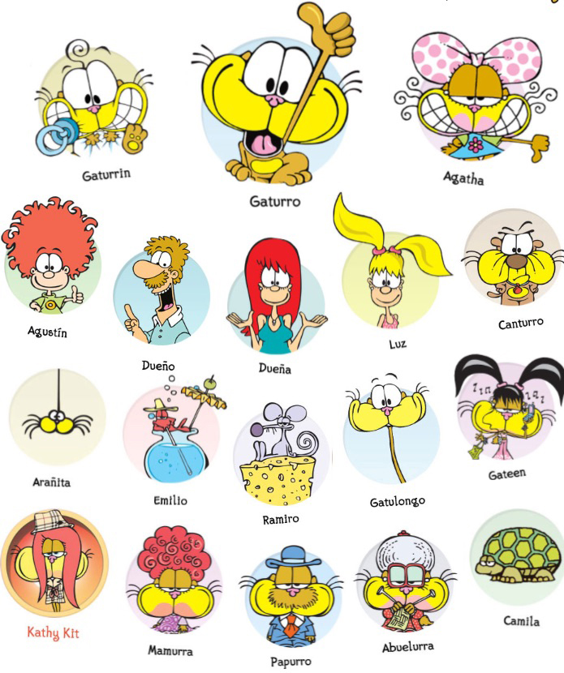

Personajes
En esta página web veremos los diferentes personajes principales que existen en Mundo Gaturro.
Gatos
Gaturro
Es el protagonista de la historieta. Se presenta como un anti héroe, un soñador y un observador
del mundo. Lo caracterizan su gran imaginación e ingenio, aunque su personalidad suele cambiar de acuerdo al
personaje con el que interactúe.Ágatha
Una gata de la cuál Gaturro está perdidamente enamorado. Ágatha es un poco egoísta y complicada,
pero muy inteligente. Aunque siempre rechaza a Gaturro, en el fondo lo quiere mucho y odia que otra gata se
le acerque. Mamurra
Es la mamá biológica de Gaturro. Es super sobreprotectora con Gaturro, le pide que coma bien,
se abrigue, estudie y que se cuide de todos los peligros. Está siempre acompañada de un Tupper,
para Gaturro obvio.Gatulongo
Es un primo de Gaturro con un cuello muy largo. Amigable y tranquilo, nunca está
apurado. Sus respuestas tardan horas en salir.Papurro
Es el papá de Gaturro. Aparece ocasionalmente por la tira, el dinamismo no es fuerte.
Todo le da mucha pereza.Abuelurra
Es la abuela de Gaturro. Al igual que Mamurra, es muy sobreprotectora con Gaturro.
Vive tejiendo abrigos ya que preocupa que Gaturro no esté abrigado todo el tiempo.
Familia Adoptiva
Daniel(El papá)
El dueño de Gaturro. Es un estereotipo de padre clase media que, aunque agobiado por el trabajo, intenta
cumplir con sus responsabilidades familiares. Su trato hacia Gaturro es cómo hacia otro hijo más. Siempre come demasiado y
suele pasar la mayor parte de su tiempo sentado en el sillón mirando el televisor, teniendo un marcado sobrepeso.Valeria (La mamá)
Es muy comprensiva y cariñosa, pero también firme. Está totalmente dedicada al hogar y su familia,
el estrés lo combate haciendo gimnasia o entusiasmándose con la clase de Feng Shui.
Luz
La hija mayor de la familia. Su incipiente adolescencia la volvió muy caprichosa y testaruda, al punto del conflicto
constante con su familia, Gaturro incluido. Agustín
El hijo menor de la familia, y parece ser el único que trata a Gaturro cómo una mascota.
Es muy curioso y se apasiona por los videojuegos.

Contactos
Mundo Gaturro
Galería
Bibliografía
Transportes
Todos los Personajes
NIK